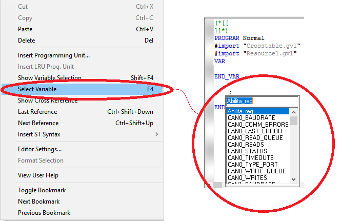
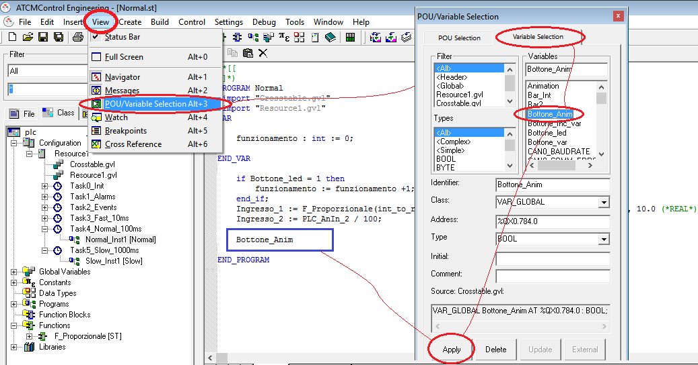
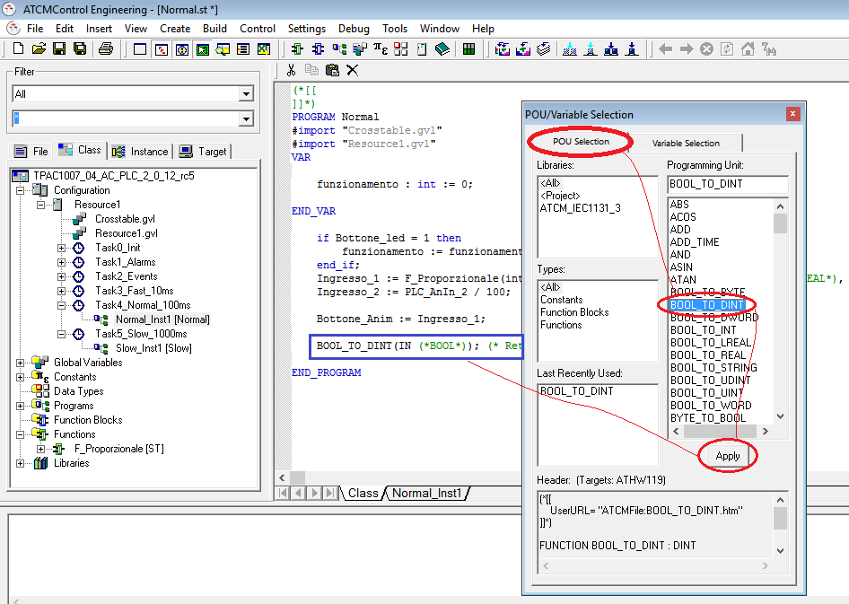

To quickly insert a variable place cursor in the desired row and press F4 or Select Variable from right mouse key.

It is possible to write the first letter of the desired variable to obtain a search filter.
Alternatively to insert variables, functions, function blocks inside a program follow these steps:
Select “View” → “POU/Variable Selection” → “Variable Selection” (or by pressing right mouse key inside a program);
Choose desired variable (you can also use filters) and press “Apply”

To insert a function / function block:
Select “View” → “POU/Variable Selection” → “POU Selection”
Choose desired function / function block and press “Apply”

Of course variables names, functions and function blocks can be directly written without following the above procedure.